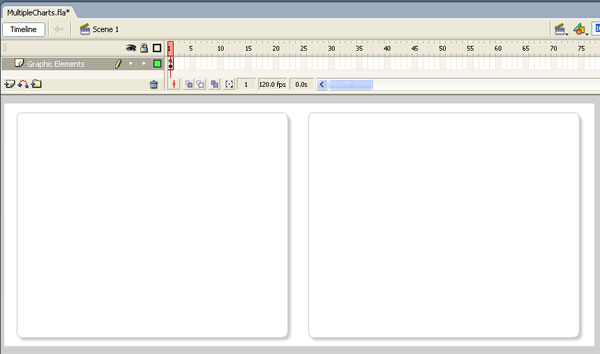
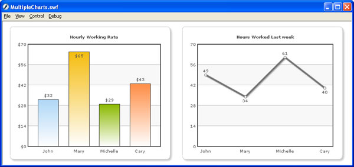

FusionCharts and Flash > Loading Multiple Charts |
In our previous example, we had seen how to load a single Column 2D chart in a Flash movie. Here, we'll see how to load two charts in a single Flash Movies. Loading two (or n charts) in your Flash movie is as simple and straight-forward as loading a single movie. You just need to create instances of each chart class, provide it the right XML data and then ask it to render. |
| In Example |
| For this example, we create MultipleCharts.fla under FlashExamples folder. Like in previous example, we create a layer "Graphic Elements" in this file too and add two oval backgrounds instead of one, as we'll now be loading two charts. Shown below is a reference image: |
|  |
| Now, in the Actions Layer of this movie, punch the following code: |
| //You first need to include the following two files in your movie. //These two files contain pre-loading functions and application //messages for the chart. //Note: If you're loading multiple charts in your Flash movie, you //do NOT need to include these files for each each. You can put these //lines in the main timeline, so that it gets loaded only once. #include "com/fusioncharts/includes/LoadingFunctions.as" #include "com/fusioncharts/includes/AppMessages.as" //To create the chart, you now need to import the Class of the //chart which you want to create. All charts are present in the package //com.fusioncharts.core.charts (Download Package > SourceCode folder) //If you're using multiple charts, you can import all the requisite //chart classes in the main timeline of your movie. That ways, you //wouldn't have to import the chart classes everytime you wish to use. import com.fusioncharts.core.charts.Column2DChart; import com.fusioncharts.core.charts.Line2DChart; // ------------- XML Data for the charts -------------- // //Data for chart 1 var strXML1:String = "<chart showBorder='0' bgAlpha='0,0' palette='1' caption='Hourly Working Rate' numberPrefix='$'>"; //Add simple data for demo. strXML1 = strXML1+"<set name='John' value='32' />"; strXML1 = strXML1+"<set name='Mary' value='65' />"; strXML1 = strXML1+"<set name='Michelle' value='29' />"; strXML1 = strXML1+"<set name='Cary' value='43' />"; strXML1 = strXML1+"</chart>"; var xmlData1:XML = new XML(strXML1); // Data for Chart 2 var strXML2:String = "<chart showBorder='0' bgAlpha='0,0' palette='1' caption='Hours Worked Last week' canvasPadding='20'>"; //Add simple data for demo. strXML2 = strXML2+"<set name='John' value='49' />"; strXML2 = strXML2+"<set name='Mary' value='34' />"; strXML2 = strXML2+"<set name='Michelle' value='61' />"; strXML2 = strXML2+"<set name='Cary' value='40' />"; strXML2 = strXML2+"</chart>"; var xmlData2:XML = new XML(strXML2); // --------------------------------------------------- // // -------------- Actual Code to create the chart ------------// //Create movie clips required for both the charts var chartContainer1MC:MovieClip = this.createEmptyMovieClip("ChartHolder1", 1); var chartContainer2MC:MovieClip = this.createEmptyMovieClip("ChartHolder2", 2); //Now, instantiate the charts using Constructor function of the chart. var chart1:Column2DChart = new Column2DChart(chartContainer1MC, 1, 380, 325, 20, 15, false, "EN", "noScale"); var chart2:Line2DChart = new Line2DChart(chartContainer2MC, 1, 380, 325, 440, 15, false, "EN", "noScale"); //Convey the XML data to chart. chart1.setXMLData(xmlData1); chart2.setXMLData(xmlData2); //Draw the charts chart1.render(); chart2.render(); //Stop stop(); |
In the above code, we're:
When you now view the application, you'll get the following output. Again, you might need to adjust the FPS of the movie based on your requirements. |
|  |
In this example, we've included just the Column 2D and Line Charts. You can include any FusionCharts v3 chart in your application in the same way. Also, here we've shown just 2 charts together. You can include any number of charts in your application (on a single screen too). Now that you're fairly convinced of the power of FusionCharts in conjunction with Flash, let's move ahead and see an advanced example that will illustrate a few advanced features like updating chart data at run-time, hiding chart, re-initializing chart etc. |